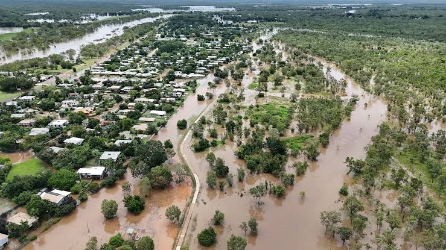
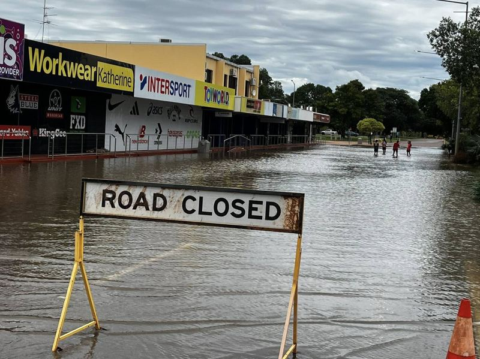
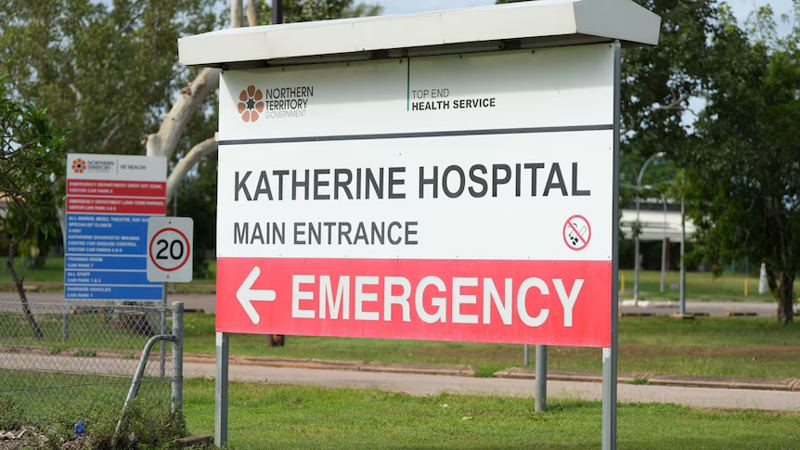

Telling a town when to start preparing for a flood.
A flood early-warning dashboard for Katherine Town Council, built from 130+ years of rainfall and river data. Judged the best dashboard in the challenge's three-year history.

The problem
Flooding is Katherine's most immediate high-impact climate risk. Major floods hit in 1957, 1998, 2006 and again in 2026, when schools closed and the hospital was evacuated.
The council and local community services had the data, but in separate places: rainfall from one source, river height from another, flood history in reports. Nothing answered the one question that matters before the wet season: when should we start preparing?
Our brief, as a "how might we"How might we combine historical flood events with key flood indicators, so Katherine can anticipate flood risk and prepare more effectively?


Reading the whole river, not just the town
Flooding depends on how much rain falls, for how long, and where in the catchment it lands. So instead of one weather station, we followed the river.
Early signal: rain here reaches town days later.
Where residents, council assets and services are exposed. River height measured here.
A reference point to compare against.
Daily rainfall and temperature at all three points, 1890–2026
Katherine River height at Katherine Bridge, 1957–2026
Rain comes first. The river follows.
The chart judges noticed most. Averaged over 130 years and read from July to June, so the wet season runs left to right. Hover over a month to compare.
Average daily rainfall and river height, by month
Rainfall: average of 3 stations, 1890–2026. River height: Katherine Bridge, 1957–2026.
Rain builds from November and peaks in January, but the river doesn't peak until February and stays high into March. That gap is why early wet-season rain (shaded) is the first warning sign.
Show the numbers
The 30 days before a flood
Then the final trigger: the pattern that became the dashboard's warning signal. Pick a flood to see how rain built up at Nitmiluk before it hit.
Rainfall total over the 30 days before each major flood
Nitmiluk National Park, running total in mm. Dots mark single days with 100mm or more.
Before all three floods, the total passed about 450mm and ended with a 100mm+ downpour. Source: SILO daily rainfall, our analysis.
Show the numbers
The dashboard
Three pages, each building on the last: what has happened, what drives a flood, and what to watch now.
What we found
Early wet-season rain is the first warning
River height lags rainfall. Rain that builds in October to December shows up in the river in February and March, so above-average early rain raises later flood risk.
The final downpour tips it over
Before each recent major flood, 30-day rain passed about 450mm and ended with a 100mm+ day. That downpour removed the lag and the river rose almost instantly.
Floods are less frequent but more severe
Three of the last four major floods followed six months of rain far above earlier events, and rain across the wider catchment mattered as much as rain in town.
What we recommended
Every recommendation traces back to a pattern in the data, and works alongside official BoM warnings rather than replacing them.
- Prepare before the wet season. Complete asset checks and ready staff and equipment, because heavy rain was followed by rapid river rises.
- Watch the wider catchment. Monitor upstream rainfall alongside Katherine Bridge river height, since upstream rain came before every major flood we analysed.
- Plan for disrupted services. Identify clients who need extra help, confirm transport, and prepare other ways to deliver care, as the 2026 school closures and hospital evacuation showed.
- Coordinate with council. Agree shared contacts and joint preparedness reviews, triggered by the same dashboard indicators.
From prototype to a plan the council could fund
Alongside the dashboard, we wrote a full Project Management Plan for rolling it out as a live system.
February to May 2027, from planning and data preparation to testing and handover.
Including a 20% contingency, plus about $3.4K a year to keep it running.
Test environment, restricted release, then full launch, with a rollback point if data or access fails.
Historical backtest, restricted live trial, then a wet-season trial, with an ISO 31000 risk register.
My role
A six-person team effort. These are the parts I owned.
- Initial data explorationExplored 130+ years of rainfall, temperature and river data to understand Katherine's climate risks before the team chose to focus on flooding.
- Choosing where to measureSelected the rainfall points along the river and tested whether upstream rain predicted floods better than rain in town.
- Flood indicator analysis and dashboard supportAnalysed rainfall and river height around past floods in Python, drilling from year to month to day, and helped build the Tableau dashboard from those findings.
- Delivery and deployment planWrote the build cycles, Definition of Ready and Done, and deployment sections of the Project Management Plan.
- Approving consultantReviewed and approved the team's work across the whole plan, and co-led integrating and editing it into one consistent document.
Recognition
Winner, LTU × NAB Work-Integrated Learning Challenge 2026
Recognised by NAB as the best dashboard in the challenge's three-year history.
Best Capstone Project, La Trobe Business School
Awarded to the top performing undergraduate business analytics group for proposing a solution that effectively improved the client's business case.
“The best dashboard I've seen in the three years of the challenge.”
A proposal and prototype for the council, designed to support official BoM flood warnings, not replace them. Flood photos are for context.